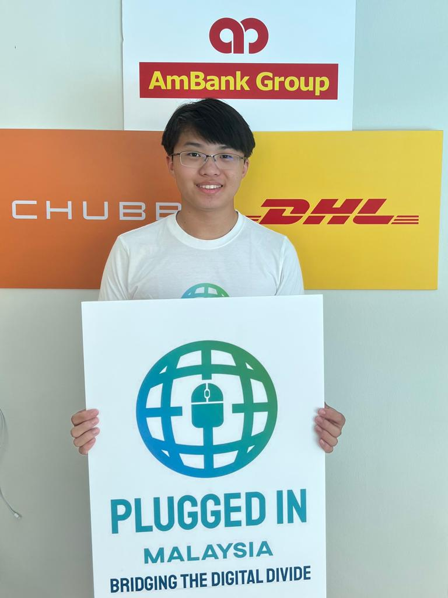

-
Kahoot Bot
September 2019
Where I started. A simple Kahoot bot built with Python and Selenium.
-
Covid Companion
March 2020 - May 2020
A Python desktop application using NLP and webscraping to provide per-country COVID-19 information and answer health related questions.
-
CS50
January 2021 - August 2022
Started and completed CS50's Intro to Computer Science. I completed modules 1-5 in 2021 and modules 6-9 during 2022.
-
Prompt Pal
July 2021 - August 2021
Android Java app developed with colleague as part of the Young Innovators Challenge. The app generates random prompts for activities for teenagers to do during the lockdown. Won Bronze against 300 schools.
-
Kahoot Bot V2
September 2021 - June 2022
To celebrate two years of learning to code, I rebuilt my Kahoot bot as a multithreaded desktop application using C#, Winforms and Selenium.
-
Cameraman
November 2021 - June 2022
An OpenCV powered motion system that locates a teacher's face from a webcam stream and uses motors to adjust a camera to the teacher's position in real time. Designed to both increase the viewing angle for online students to ensure they don't miss content and make hybrid teaching more seamless.
-
johnling.me
June 2022 - July 2022
My personal portfolio website to talk about myself and showcase both web development and design skills. Created with Bootstrap HTML, Sass and Javascript.
-
Trello Tabliss Integration
October 2022 - Present
My first full stack application to integrate Trello with the Tabliss browser extension using Firebase and NodeJS for the backend. Frontend is built using React.
-
Pseudocode Compiler
October 2022 - May 2023
Functional compiler built using C++ to translate pseudocode to valid Python to improve understanding of both compiler theory and theoretical computer science.
About Me
Who?
A bit about me

What?
My tools for the job
Languages
Software
- React
- Bootstrap
- Sass
- jQuery
- OpenCV
- Winforms
- Beautiful Soup
- Selenium
Hardware
- Computer Aided Design (CAD)
- 3D Printing
- Arduino + ATmega328p
- Raspberry Pi
- Circuit Design
- Refurbishment
Tooling
- Ubuntu Server
- NPM
- Docker
- Bash
- NGINX
- SSH
- Git
- QEMU-KVM + VFIO
When?
Where it all began
Timeline
Where?
(can you find me)
Why?
Why code?
